BrainSINS Plugins and 3rd Party Integrations
First create your BrainSINS account
Before you start, you need to create a BrainSINS account, as in the installation process of our plugins, you'll be required a client token, that you can get after registering at BrainSINS. If you haven't a BrainSINS account, please check the Get Started section.
An overview
Integrating BrainSINS with your online store using our plugins is really simple. Actually we offer plugins for Prestashop and Magento, which can be installed in less than 5 minutes.We also offer integration guides for some other eCommerce platforms such as Shopify or SEOshop. Following the integration guides for those platforms, you can integrate BrainSINS with your online store in less than 30 minutes.
If you are not using any of those platforms (Magento, Prestashop, Shopify, SEOshop), you can integrate BrainSINS by means of our JavaScript integration, which will require a little more time, but it will not require more than a few hours of your time.
Installing our Prestashop Module
Installing our module for Prestashop is quite simple. You need to download our module and install it as any other Prestashop module. After the installation, you'll be required to introduce your client token and configure the recommendation strategies for your online store.
We have prepared a step-by-step installation and configuration guide for our Prestashop module. Choose your Prestashop version to access the specific guides:
Prestashop 1.5+
Step One
Go to the admin panel of your online store, and click in Modules -> Modules, so you can access to the page where you can manage your modules.
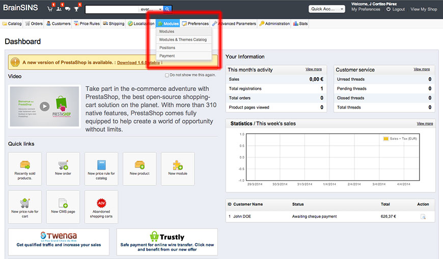
Step Two
Once in the modules page, you need to click the "Add a new module" button, located at the top-right of the screen.

Step Three
Now you have to choose what plugin to install. Select the ZIP file you have previously downloaded containing our module and click "Upload this module". If you haven't donwloaded our module yet, first download it from this link.
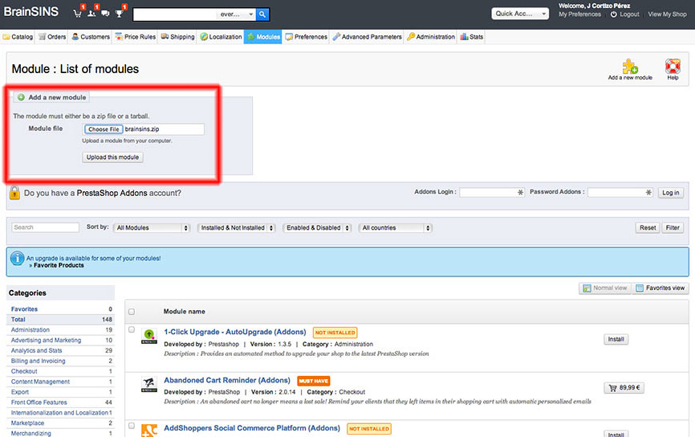
Step Four
At this point, the module have been uploaded to your online store, but it has not been installed. Find the BrainSINS module in your module's list and click "Install".
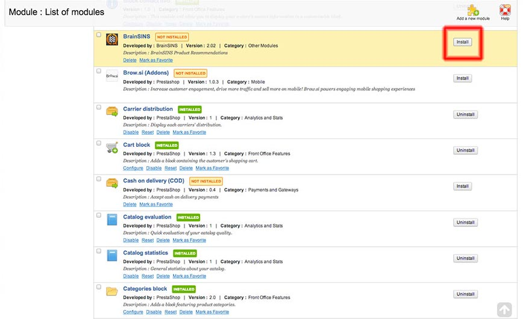
Step Five
The module in now installed, and Prestashop should redirect you to the following screen, showing the message "Module(s) installed successfully". At this screen you will also find the main configuration of our module. To make our module work, you need to introduce your client token in BrainSINS Key. You can find the BrainSINS Key accessing our management tool: Settings->Account info. This id has the following structure: BS-0000000000-1.
You should also enable the plugin, by clicking the radio button option that enables the plugin. And you also need to check your policy regarding to what users BrainSINS can send email communications on your behalf (such as cart abandonment emails, etc.). In most cases, the best option should be to choose "Users subscribed to newsletter", but it may depend on the configuration of your online store.
Don't forget to click the "Update settings" button after you have updated the basic configuration.
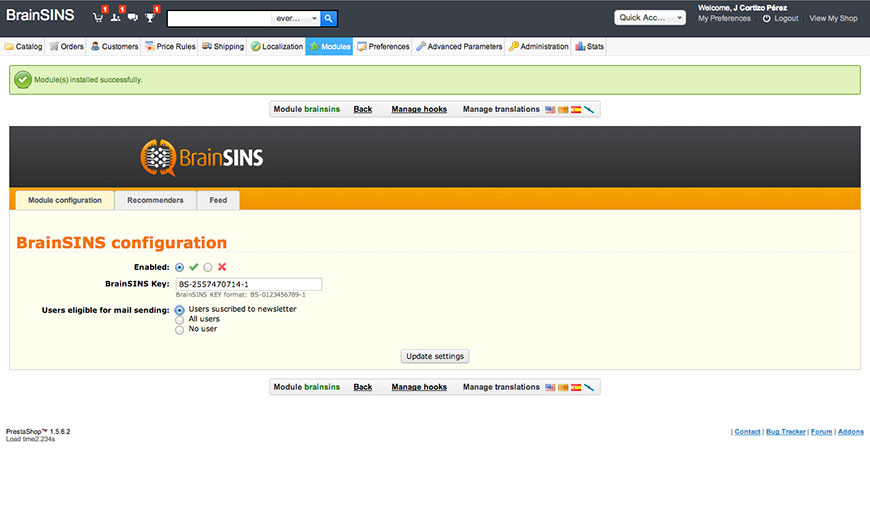
Step Six
After the configuration have been successfully saved, you need to click the "Recommenders" option of our configuration panel, in order to choose what recommendation strategies you want to integrate with your store and at what locations in each page.
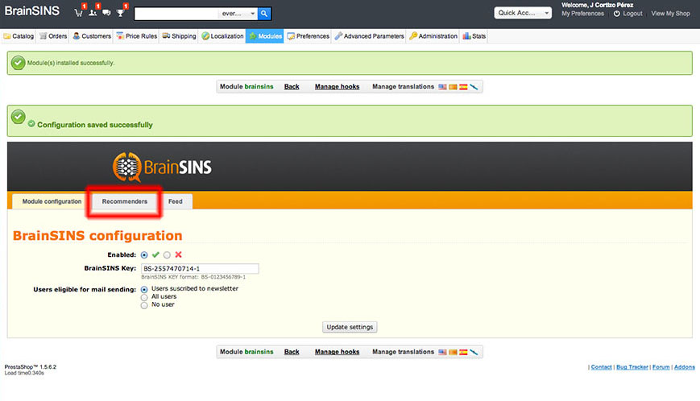
Step Seven
In the Recommenders page, you will see that you can add recommenders to each page type. In this way, you can configure several recommendation strategies at each page type. In order to add a recommender to your online store, choose at what page type you want the recommender to be shown (product page, home page, etc.) and click in the "Add new recommender" button.
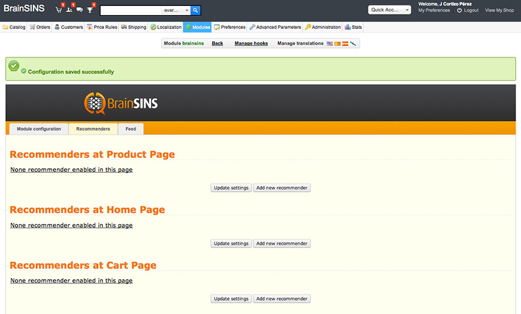
Step Eight
To add a new recommender, you will have to choose among several recommendation strategies available for that page. You will also have to choose at what position on the page you want the recommender to be shown. You can choose from a set of predefined locations (hooks), or introduce the id of the DIV you want the recommendations to be shown.
Remember to click the "Update settings" button after making any changes in the Recommenders configuration.
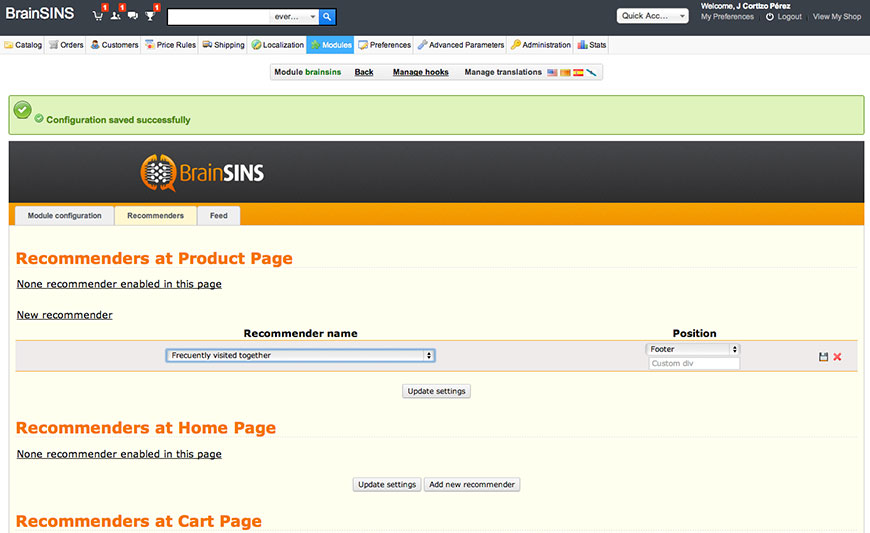
Step Nine
After adjusting your recommendation strategies, you can check your online store to see how the recommenders are shown. If you want to adjust the look and feel of the recommended products, you can access our our module. To make our module work, you need to introduce your client token in BrainSINS Key. You can find the BrainSINS Key management tool where you have a editor that allows you to change the look & feel of the recommendations in real time.
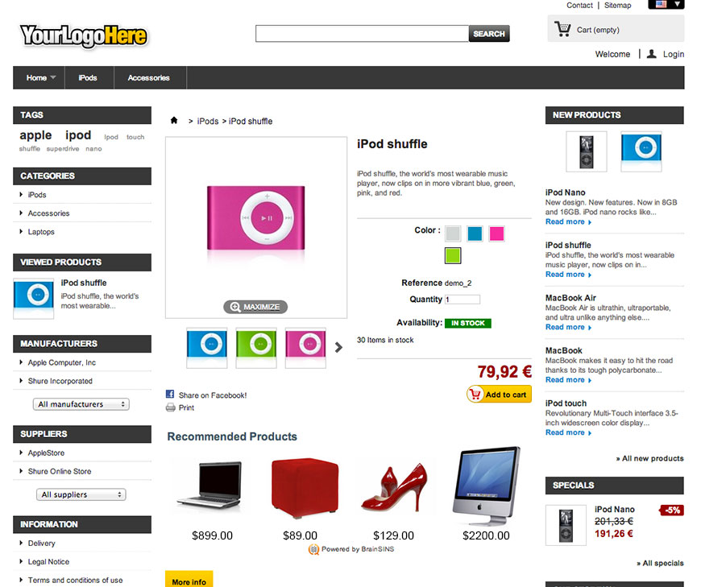
Prestashop 1.6+
Step One
Go to the admin panel of your online store, and click in Modules -> Modules, so you can access to the page where you can manage your modules.
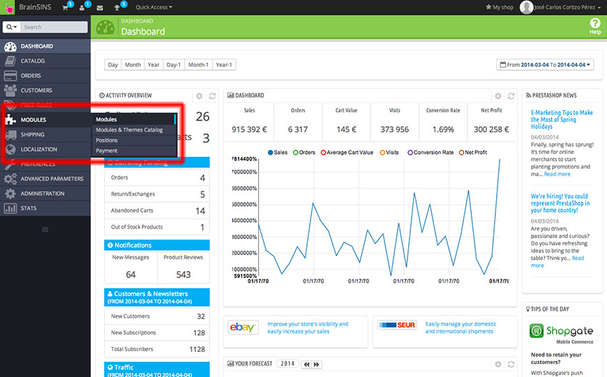
Step Two
Once in the modules page, you need to click the "Add a new module" button, located at the top-right of the screen.
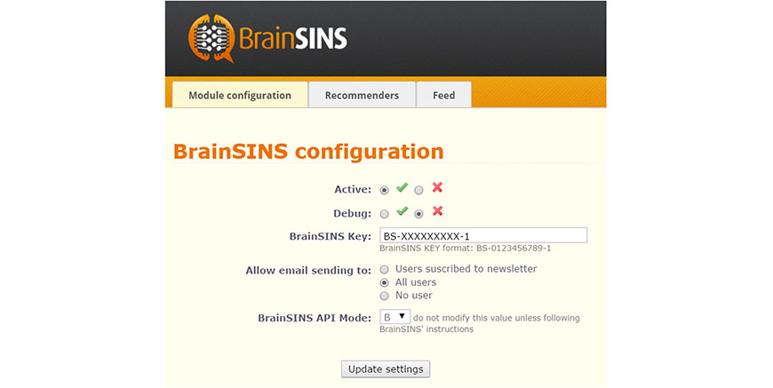
Step Three
Now you have to choose what plugin to install. Select the ZIP file you have previously downloaded containing our module and click "Upload this module". If you haven't donwloaded our module yet, first download it from this link.
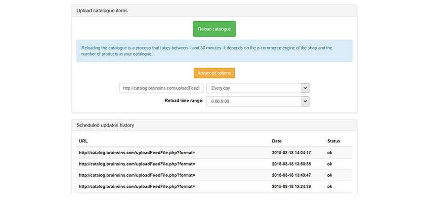
Step Four
At this point, the module have been uploaded to your online store, but it has not been installed. Find the BrainSINS module in your module's list and click "Install".
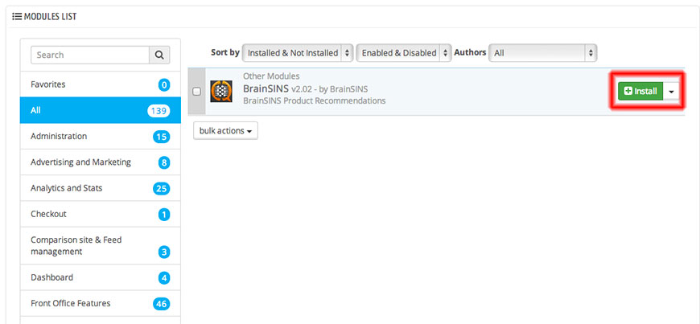
Step Five
The module in now installed, and Prestashop should redirect you to the following screen, showing the message "Module(s) installed successfully". At this screen you will also find the main configuration of our module. To make our module work, you need to introduce your client token in BrainSINS Key. You can find the BrainSINS Key accessing our management tool: Settings->Account info. This id has the following structure: BS-0000000000-1.
You should also enable the plugin, by clicking the radio button option that enables the plugin. And you also need to check your policy regarding to what users BrainSINS can send email communications on your behalf (such as cart abandonment emails, etc.). In most cases, the best option should be to choose "Users subscribed to newsletter", but it may depend on the configuration of your online store.
Don't forget to click the "Update settings" button after you have updated the basic configuration.
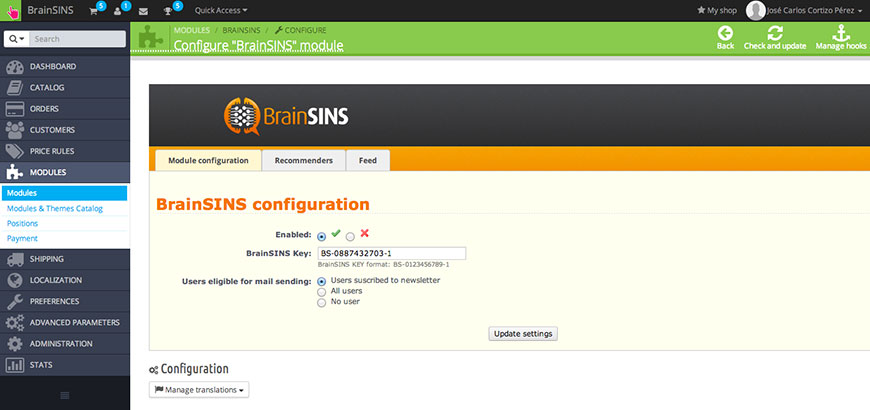
Step Six
After the configuration have been successfully saved, you need to click the "Recommenders" option of our configuration panel, in order to choose what recommendation strategies you want to integrate with your store and at what locations in each page.
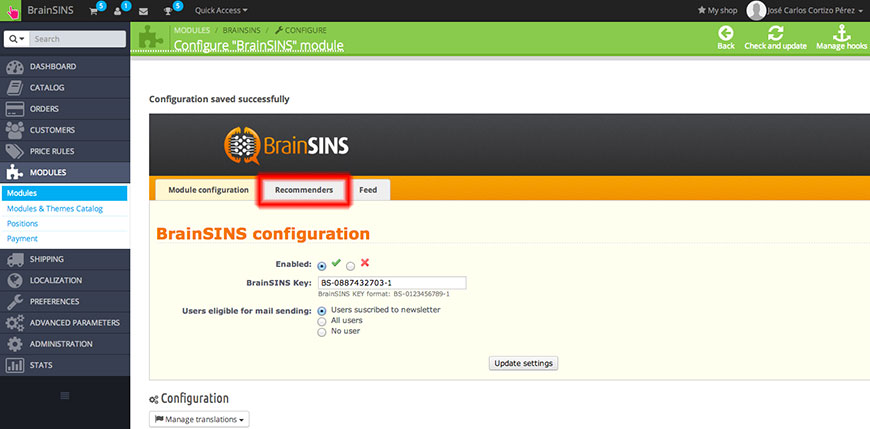
Step Seven
In the Recommenders page, you will see that you can add recommenders to each page type. In this way, you can configure several recommendation strategies at each page type. In order to add a recommender to your online store, choose at what page type you want the recommender to be shown (product page, home page, etc.) and click in the "Add new recommender" button.
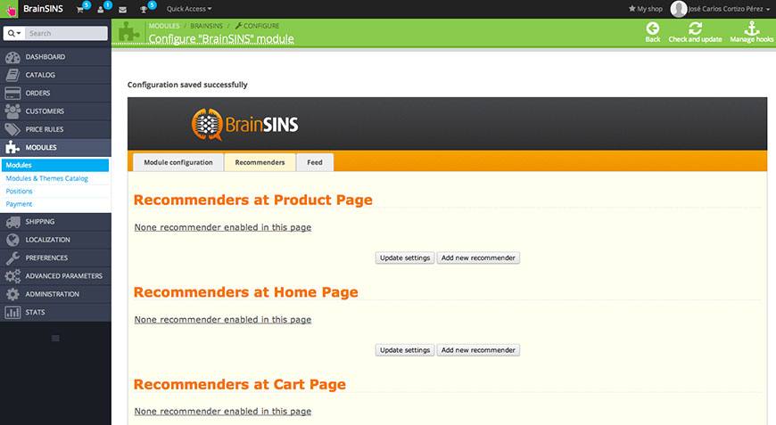
Step Eight
To add a new recommender, you will have to choose among several recommendation strategies available for that page. You will also have to choose at what position on the page you want the recommender to be shown. You can choose from a set of predefined locations (hooks), or introduce the id of the DIV you want the recommendations to be shown.
Remember to click the "Update settings" button after making any changes in the Recommenders configuration.
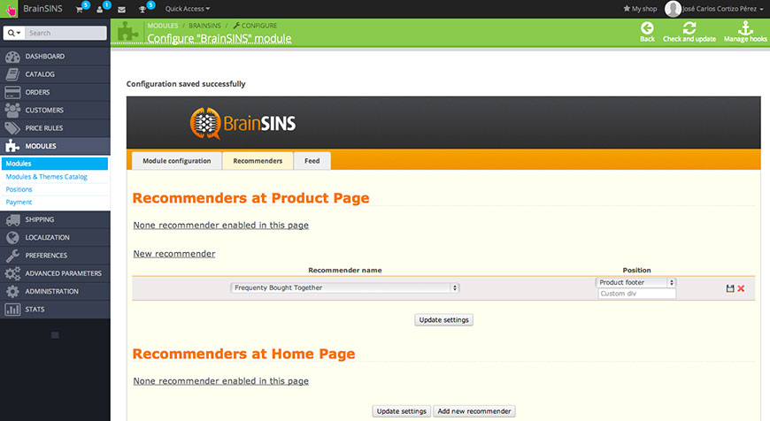
Step Nine
After adjusting your recommendation strategies, you can check your online store to see how the recommenders are shown. If you want to adjust the look and feel of the recommended products, you can access our our module. To make our module work, you need to introduce your client token in BrainSINS Key. You can find the BrainSINS Key management tool where you have a editor that allows you to change the look & feel of the recommendations in real time.
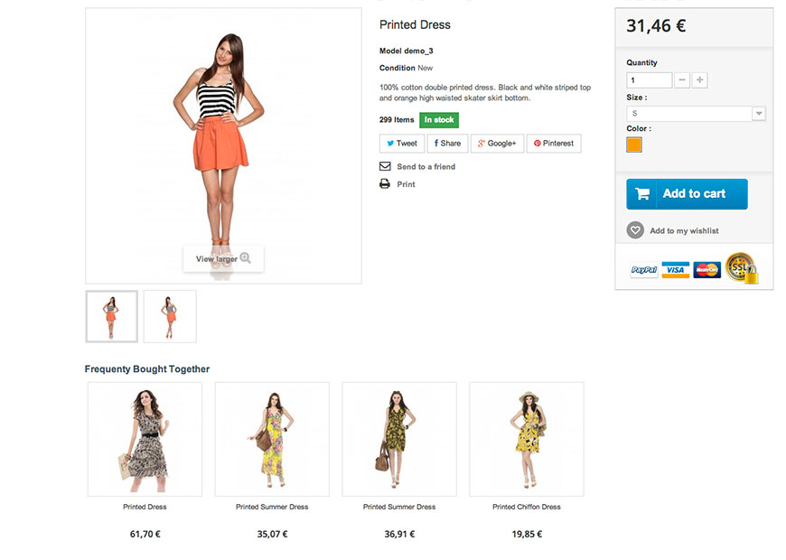
Magento
Actually, we are finishing a new version of our Magento extension. Please, come back in a few days for further information.